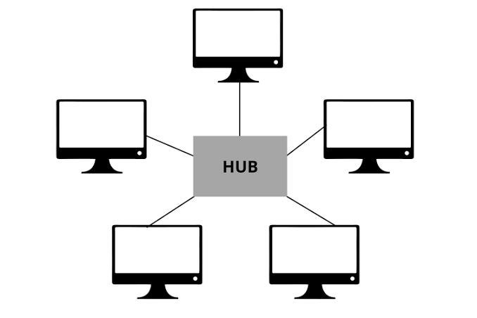

Apa itu Topologi Jaringan?
Topologi jaringan adalah pola atau metode yang digunakan untuk menghubungkan beberapa komputer atau perangkat dalam jaringan, baik secara fisik maupun logis. Ini mengatur bagaimana node (perangkat) saling berkomunikasi dan bagaimana data mengalir dalam sistem tersebut.
Topologi Bus

Topologi Bus adalah konfigurasi jaringan linear di mana semua perangkat komputer terhubung ke satu kabel utama sebagai jalur transmisi tunggal. Kabel pusat ini bertindak seperti koridor utama atau tulang punggung (backbone) tempat data mengalir dari satu ujung ke ujung lainnya.
Cara Kerja:
Seluruh komputer terhubung secara estafet ke satu kabel panjang yang disebut backbone. Ketika sebuah data dikirim, data tersebut akan berjalan sepanjang kabel utama dan melewati semua komputer. Setiap komputer akan memeriksa apakah data tersebut ditujukan untuk dirinya. Jika iya, data diterima; jika tidak, data diabaikan. Di ujung kabel, terdapat Terminator untuk menyerap sinyal agar tidak memantul kembali dan menyebabkan gangguan.
Kelebihan:
• Sangat Hemat Biaya: Kebutuhan kabel sangat minim karena perangkat cukup dijajarkan di sepanjang kabel utama.
• Instalasi Sederhana: Cocok untuk setup jaringan darurat atau skala kecil yang tidak memerlukan pengaturan rumit.
Kekurangan:
• Titik Kegagalan Tunggal: Jika kabel utama patah atau putus di tengah, seluruh jaringan setelah titik tersebut (atau bahkan seluruhnya) akan mati total.
• Tabrakan Data: Karena hanya ada satu jalur, jika dua komputer mengirim data secara bersamaan, akan terjadi tabrakan data yang memperlambat jaringan.
• Sulit Melacak Masalah: Jika jaringan mati, teknisi harus memeriksa sambungan satu per satu di sepanjang kabel.
Topologi Star

Topologi Star adalah desain jaringan di mana setiap perangkat (komputer, printer, dll.) terhubung langsung ke satu perangkat pusat seperti hub atau switch. Perangkat pusat ini bertindak sebagai pengatur lalu lintas, yang mengarahkan semua aliran data antar perangkat dalam jaringan.
Cara Kerja:
Setiap komputer atau node memiliki kabel tersendiri yang terhubung langsung ke sebuah perangkat pusat, biasanya berupa Switch atau Hub. Ketika Komputer A ingin mengirim data ke Komputer B, data tersebut dikirim terlebih dahulu ke Switch pusat. Switch kemudian membaca alamat tujuan (MAC Address) dan langsung meneruskannya ke Komputer B tanpa mengganggu perangkat lain.
Kelebihan:
• Isolasi Kerusakan: Jika salah satu kabel LAN putus atau kartu jaringan (NIC) komputer rusak, hanya komputer tersebut yang terputus dari jaringan. Komputer lain tetap berfungsi normal.
• Kemudahan Manajemen: Sangat mudah untuk menambah atau mengurangi komputer baru tanpa perlu mematikan jaringan.
• Deteksi Masalah Cepat: Kerusakan mudah dilacak karena setiap perangkat memiliki jalur kabel tunggal ke pusat.
Kekurangan:
• Ketergantungan Pusat: Jika Switch atau Hub pusat mengalami kerusakan fisik atau hang, seluruh jaringan akan lumpuh total.
• Biaya Kabel: Membutuhkan jumlah kabel yang jauh lebih banyak dibandingkan topologi Bus karena setiap perangkat wajib ditarik kabel tersendiri ke pusat.
Topologi Ring
Topologi ring adalah jaringan komputer di mana setiap perangkat terhubung ke dua perangkat lain, membentuk pola melingkar (cincin). Data mengalir searah atau berlawanan arah dari satu perangkat ke perangkat berikutnya menggunakan token. Jika satu perangkat rusak, seluruh jaringan bisa terputus.
Cara Kerja:
Data dikirim secara estafet searah jarum jam dari satu komputer ke komputer berikutnya menggunakan token (tiket digital); komputer yang ingin mengirim data akan mengisi token dengan pesan dan alamat tujuan, kemudian token tersebut berputar dalam lingkaran hingga disalin oleh komputer penerima dan kembali ke pengirim untuk dikosongkan.

Kelebihan:
• Hemat Kabel: Biaya instalasi dan kebutuhan kabel jauh lebih sedikit dibandingkan topologi mesh atau star.
• Performa Stabil: Aliran data lebih teratur karena menggunakan sistem token passing, yang mencegah terjadinya tabrakan data (collision).
• Pengaturan Mudah: Penambahan atau pemindahan perangkat bisa dilakukan dengan relatif mudah tanpa harus merombak seluruh jaringan dari pusat
Kekurangan:
• Sensitif Terhadap Kerusakan: Jika satu kabel atau perangkat rusak (putus), koneksi seluruh jaringan akan terganggu atau mati total.
• Sulit Troubleshooting: Saat terjadi gangguan, pelacakan letak masalah memakan waktu karena tidak ada titik pusat.
• Perlu Down Time: Untuk menambah atau mengurangi perangkat, jaringan biasanya harus dihentikan sementara waktu.